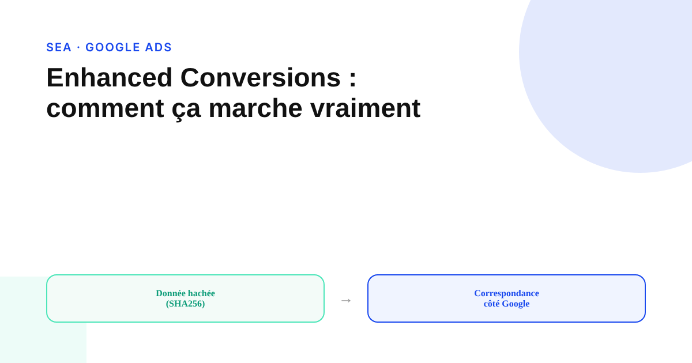
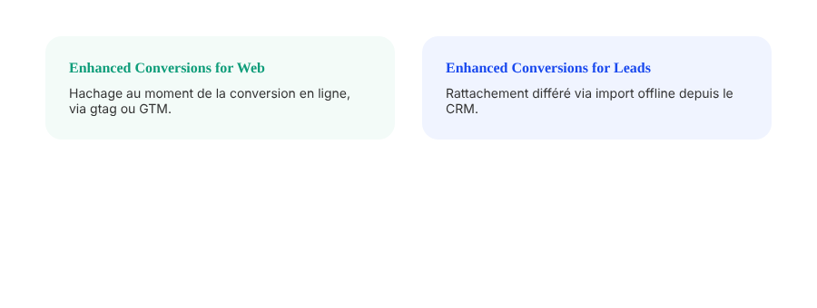

Enhanced Conversions sur Google Ads : comment ça marche, et les erreurs qui cassent le signal
Beaucoup de comptes ont activé les conversions améliorées sans vérifier qu'elles remontent vraiment de la donnée. La mécanique est simple sur le papier, mais trois ou quatre erreurs de configuration suffisent à la rendre inopérante en silence.

Les Enhanced Conversions (conversions améliorées) existent depuis plusieurs années dans Google Ads, mais leur adoption reste inégale : beaucoup de comptes ont coché l'option sans vérifier ensuite, via le rapport de diagnostic, que la donnée remonte réellement. Le principe est documenté par Google de façon précise : il vaut mieux le comprendre avant de l'activer que de cocher une case et espérer.
Le principe : hacher une donnée que vous possédez déjà
Le mécanisme complète le tag de conversion existant : au moment d'une conversion, le site capture un identifiant de première partie — email, téléphone, nom, adresse — le transforme en empreinte irréversible via l'algorithme SHA256, puis envoie cette empreinte à Google en même temps que le signal de conversion habituel. Google rapproche cette empreinte de ses propres données hachées côté utilisateurs connectés, pour rattacher des conversions qui auraient été perdues à cause des restrictions sur les cookies tiers, des bloqueurs de publicité, ou d'un parcours multi-appareils. Aucune donnée brute n'est transmise : seule l'empreinte circule, et Google indique supprimer les empreintes qui ne trouvent pas de correspondance.
Deux modes, pour deux types de conversion
La version Enhanced Conversions for Web s'installe via gtag ou Google Tag Manager et hache la donnée au moment précis d'une conversion en ligne — un achat, une inscription, une soumission de formulaire. La version Enhanced Conversions for Leads répond à un besoin différent : les cycles de vente B2B où le lead capté sur le site ne devient client que des semaines plus tard, dans un CRM. Dans ce cas, l'identifiant du formulaire est haché et conservé, puis rattaché au clic publicitaire d'origine lors de l'import différé de la conversion offline. C'est la version la plus pertinente pour un cycle de vente long, et la plus souvent mal configurée faute de lien propre entre le CRM et Google Ads.

Le consentement n'est pas une option annexe
Google recommande fortement l'activation du Consent Mode pour les Enhanced Conversions, sans toujours l'imposer comme condition technique stricte selon les supports consultés — la vraie contrainte dure reste l'obligation générale du Consent Mode v2 dans l'Espace économique européen depuis mars 2024 pour toute mesure Google Ads, Enhanced Conversions comprises. En pratique, une configuration de consentement mal réglée est l'une des causes les plus fréquentes d'un signal qui ne remonte pas, sans qu'aucun message d'erreur explicite ne le signale dans l'interface.
Le gain mesuré : réel, mais pas un chiffre unique à retenir
Google communique sur des gains de mesure liés à l'activation des Enhanced Conversions, mais les ordres de grandeur varient selon les supports officiels eux-mêmes et selon le type de campagne : les effets rapportés sur YouTube sont généralement présentés comme plus importants que sur Search. Des études de cas ponctuelles, publiées par Google ou par des annonceurs, affichent des gains encore plus marqués sur des comptes spécifiques. Aucun de ces chiffres ne constitue une garantie transposable à un compte donné : le vrai indicateur à suivre est le taux de correspondance (match rate) visible dans le rapport de diagnostic propre à chaque compte, pas une statistique moyenne publiée ailleurs.
Les erreurs qui cassent le signal en silence
Cinq causes reviennent le plus souvent, par ordre de fréquence observée : l'option « Activer les conversions améliorées » non cochée au niveau de chaque action de conversion individuelle dans l'interface Google Ads — l'erreur la plus courante, malgré un tag technique par ailleurs correctement posé ; un mauvais mappage des variables dans Google Tag Manager, qui laisse les champs hachés vides ; une configuration de consentement qui bloque le signal avant même qu'il parte ; des données mal formatées (email mal saisi, numéro de téléphone incomplet) qui abaissent le taux de correspondance sans le faire tomber à zéro ; et, côté Leads spécifiquement, un tag de liaison de conversion absent qui empêche de rattacher l'import offline au clic d'origine. Le rapport de diagnostic intégré à Google Ads reste l'outil officiel pour objectiver lequel de ces points touche un compte donné, plutôt que de deviner.
FAQ
Les Enhanced Conversions envoient-elles des données personnelles en clair à Google ?
Non. Les identifiants (email, téléphone, nom, adresse) sont hachés en SHA256 côté site avant tout envoi, de façon irréversible. Google indique ne recevoir que les empreintes hachées, jamais la donnée brute, et supprimer les hachages qui ne trouvent pas de correspondance.
Quelle est la différence entre Enhanced Conversions for Web et for Leads ?
La version Web hache la donnée au moment même d'une conversion sur le site via gtag ou Google Tag Manager. La version Leads sert aux conversions hors ligne : la donnée du formulaire est hachée et stockée, puis rattachée au clic publicitaire d'origine lors de l'import différé de la conversion offline, une fois le lead devenu client.
Pourquoi mes Enhanced Conversions ne remontent-elles aucune donnée malgré une configuration apparente ?
La cause la plus fréquente est l'oubli d'activer l'option au niveau de chaque action de conversion dans l'interface Google Ads, en plus du tag technique. Viennent ensuite le mauvais mappage des variables dans Google Tag Manager, une configuration de Consent Mode qui bloque le signal, et des champs mal formatés (email mal saisi, téléphone incomplet).
Envie de vérifier si vos Enhanced Conversions remontent vraiment de la donnée ?
Pour aller plus loin, voir la page Analytics, et l'article Consent Mode v2 : ce qui casse vraiment vos données si mal configuré.
Pour continuer sur ce sujet.